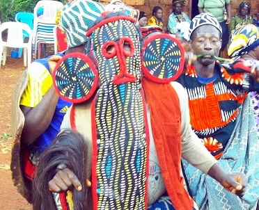

Awakening the Joyful Feelings
Cameroon is home to more than 200 different traditional dances. Dance is part of most ceremonies and rituals. Such dances accompany births, christenings, weddings, and funerals and invoke the spirits of ancestors to cure the ill or increase fertility. The Bamileke perform war dances, for example, and sometimes it incorporates the slaying of a goat with a single blow to demonstrate the dancers' prowess.
The Baka dance the Luma to celebrate a successful hunt. Among some groups, dancers work themselves into a trance and communicate with the spirit world.
Typically, traditional dances follow certain restrictions. Most traditional dances segregate participants according to sex. For example, women and men may form concentric same-sex circles, or they may dance in separate areas.
Improvisations are common, but still there are rules
Among various fondoms in the Cameroon grassfields, nobles and commoners may not participate in the same dances. Likewise, traditional laws severely restrict the dancing of the fon's wives and daughters, often restricting them to the palace.

Some dances are intended only for a specific class of people, such as hunters, jesters, or warriors. Among some ethnic groups, professional dancers make their living performing dances at the appropriate ceremonies. In some villages, a diviner dances as part of his or her duties. In modern times, such traditional dance professionals are rare. Instead, professional dancers live in urban centres and perform for tourists or at national festivals.
Many traditional Cameroonian dances follow strict choreography, although improvisation is common. Dancers move different parts of the body independently, focusing motion on more than one area. Dances are often associated with specific regalia or props. Traditional objects used include leather fans and small pieces of cloth. In the grasslands, masks are common. The gourna of the Tupuri incorporates long sticks that dancers carry upright in a circle.

Véronique Nayolo ( Blogger )
While writting this article I have mostly used the sources from Wikipedia, Mbaku and Chrispin, but also incorporated my personal expirience.
Comments
Louis Tonta
3 weeks agoExcellent reportage. Keep up the good work. It would be great if you cover some other area too.
Véronique Nayolo
5 weeks agoAmazing text, I can almost feel the athmosphere.
Laura Tonta
May 27, 2019I hope to participate on next occasion.
Émil Menkam
May 24, 2019Always good to see the tradition keepers.